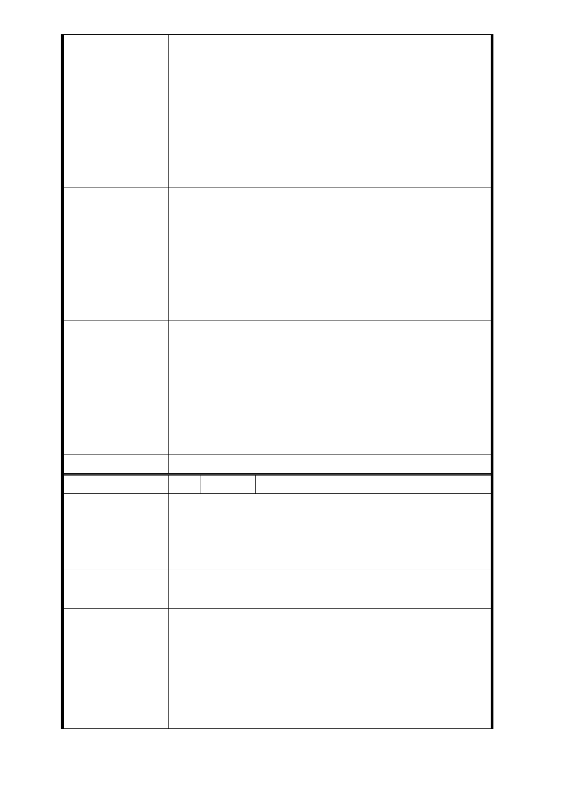

施工一半無法完公，被法院或銀行拍賣誰來保障原
住戶之權益。為何更新計畫只是本社區之小部分，
大部分未更新其市容豈不更難看，是否有其他不堪
或有利其他人(或財團)之計畫。政令宣導不周，讓
建商有各個擊破之機會。
4. 目前有多建案常因環境不佳導致停工，改建之住戶
只能自力救濟自行續建，對住戶而言相當無保障，
政府又無力協助。
1. 請將光華新村社區全部劃定為都市更新地區；任何
公聽會座談會會議通知本人出席。
2. 每次說明會或公聽會請安排假日以便上班族可以參
建 議 辦 法 與。
3. 相關會議鈞請掛號郵寄通知。
4. 請建商針對每個住戶提出保證金(約略市價八成)，
住戶於交屋時再歸回保證金。
1. 本案係由開發者申請本府「促進都市再生 2010 臺
北好好看」開發計畫，並通過本府推薦，因此本案
開發範圍係由開發者所提出，包括更新地區範圍。
市 府 回 應 意 見 另計畫範圍外之土地及合法建築物所有權人，可於
符合更新單元劃定基準下，自行申請劃定更新單元。
2. 另本陳情意見涉及都市更新部分，移請本市都市更
新處及實施者參考辦理。
委員會決議 依市府回應意見辦理。
編 號 5 陳情人 吳忠賢
1. 本計畫案是開發商主動提出申請是否充分與土地房
陳 情 理 由 屋區分所有權人溝通。
2. 後續的更新改建茲事體大，未詳實規劃或經住戶同
意貿然同意變更，只會徒增恐慌民怨。
建 議 辦 法 1. 暫緩同意本計畫案之變更
2. 若確實達變更門檻，應加強說明溝通。
1. 本案由鼎昌建築管理公司提案「參與『促進都市再
生 2010 年臺北好好看』開發計畫案」，經本府審查
市府回應意見
原則同意推薦。嗣經該公司擬具都市計畫書辦理都
市計畫變更，經檢核其所附之都市更新事業計畫同
意書比例已達法定門檻（土地及私有合法建築物所
有權人均超過 3/5，其所有土地總陎積及合法建築
物總樓地板陎積均超過 2/3），惟後續辦理都市更新
- 11 -